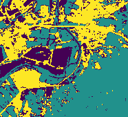

Classification
In this example we will do some simple cell classification based on multiband imagery and a target/label raster. As a part of the process we’ll explore the cross-validation support in SparkML.
Setup
First some setup:
import astraea.spark.rasterframes._
import astraea.spark.rasterframes.ml.{NoDataFilter, TileExploder}
import geotrellis.raster._
import geotrellis.raster.render._
import geotrellis.raster.io.geotiff.SinglebandGeoTiff
import org.apache.spark.ml.Pipeline
import org.apache.spark.ml.classification.DecisionTreeClassifier
import org.apache.spark.ml.evaluation.MulticlassClassificationEvaluator
import org.apache.spark.ml.feature.VectorAssembler
import org.apache.spark.ml.tuning.{CrossValidator, ParamGridBuilder}
import org.apache.spark.sql._
implicit val spark = SparkSession.builder().
withKryoSerialization.
master("local[*]").appName(getClass.getName).getOrCreate().withRasterFrames
spark.sparkContext.setLogLevel("ERROR")
import spark.implicits._
// Utility for reading imagery from our test data set
def readTiff(name: String): SinglebandGeoTiff = SinglebandGeoTiff(s"../core/src/test/resources/$name")
Loading Data
The first step is to load multiple bands of imagery and construct a single RasterFrame from them. To do this we:
- Identify the GeoTIFF filename.
- Read the TIFF raster
- Convert to a raster frame of
tileSizesized tiles, with an appropriate column name - Use the RasterFrames
spatialJoinfunction to create a new RasterFrame with a column for each band
val filenamePattern = "L8-%s-Elkton-VA.tiff"
val bandNumbers = 2 to 7
val bandColNames = bandNumbers.map(b ⇒ s"band_$b").toArray
val tileSize = 10
// For each identified band, load the associated image file
val joinedRF = bandNumbers.
map { b ⇒ (b, filenamePattern.format("B" + b)) }.
map { case (b, f) ⇒ (b, readTiff(f)) }.
map { case (b, t) ⇒ t.projectedRaster.toRF(tileSize, tileSize, s"band_$b") }.
reduce(_ spatialJoin _)
We should see a single spatial_key column along with 6 columns of tiles.
scala> joinedRF.printSchema()
root
|-- spatial_key: struct (nullable = true)
| |-- col: integer (nullable = false)
| |-- row: integer (nullable = false)
|-- band_2: tile (nullable = true)
|-- band_3: tile (nullable = true)
|-- band_4: tile (nullable = true)
|-- band_5: tile (nullable = true)
|-- band_6: tile (nullable = true)
|-- band_7: tile (nullable = true)
Similarly pull we pull in the target label data. When load the target label raster we have to convert the cell type to Double to meet expectations of SparkML.
val targetCol = "target"
val target = readTiff(filenamePattern.format("Labels")).
mapTile(_.convert(DoubleConstantNoDataCellType)).
projectedRaster.
toRF(tileSize, tileSize, targetCol)
Take a peek at what kind of label data we have to work with.
scala> target.select(agg_stats(target(targetCol))).show
+---------+-----------+---+---+------------------+------------------+
|dataCells|noDataCells|min|max| mean| variance|
+---------+-----------+---+---+------------------+------------------+
| 1626| 30674|0.0|2.0|0.8031980319803198|0.2798421711154381|
+---------+-----------+---+---+------------------+------------------+
Join the target label RasterFrame with the band tiles to create our analytics base table
val abt = joinedRF.spatialJoin(target)
ML Pipeline
The data preparation modeling pipeline is next. SparkML requires that each observation be in its own row, and those observations be packed into a single Vector type. The first step is to “explode” the tiles into a single row per cell/pixel. Then we filter out any rows that have NoData values (which will cause an error during training). Finally we use the SparkML VectorAssembler to create that Vector.
val exploder = new TileExploder()
val noDataFilter = new NoDataFilter().
setInputCols(bandColNames :+ targetCol)
val assembler = new VectorAssembler().
setInputCols(bandColNames).
setOutputCol("features")
We are going to use a decision tree for classification. You can swap out one of the other multi-class classification algorithms if you like. With the algorithm selected we can assemble our modeling pipeline.
val classifier = new DecisionTreeClassifier().
setLabelCol(targetCol).
setFeaturesCol(assembler.getOutputCol)
val pipeline = new Pipeline().
setStages(Array(exploder, noDataFilter, assembler, classifier))
Cross Validation
To extend the sophistication of the example we are going to use the SparkML support for cross-validation and hyper-parameter tuning. The first step is to configure how we’re going to evaluate our model’s performance. Then we define the hyperparmeter(s) we’re going to vary and evaluate. Finally we configure the cross validator.
val evaluator = new MulticlassClassificationEvaluator().
setLabelCol(targetCol).
setPredictionCol("prediction").
setMetricName("accuracy")
val paramGrid = new ParamGridBuilder().
addGrid(classifier.maxDepth, Array(2, 3, 4)).
build()
val trainer = new CrossValidator().
setEstimator(pipeline).
setEvaluator(evaluator).
setEstimatorParamMaps(paramGrid).
setNumFolds(4)
Push the “go button”:
scala> val model = trainer.fit(abt)
model: org.apache.spark.ml.tuning.CrossValidatorModel = cv_fe7476a7bd47
Model Evaluation
To view the model’s performance we format the paramGrid settings used for each model and render the parameter/performance association.
val metrics = model.getEstimatorParamMaps.
map(_.toSeq.map(p ⇒ s"${p.param.name} = ${p.value}")).
map(_.mkString(", ")).
zip(model.avgMetrics)
scala> metrics.toSeq.toDF("params", "metric").show(false)
+------------+------------------+
|params |metric |
+------------+------------------+
|maxDepth = 2|0.9602839559962448|
|maxDepth = 3|0.9850291835043165|
|maxDepth = 4|0.9856287038880095|
+------------+------------------+
Finally, we score the original data set (including the cells without target values) and add up class membership results.
scala> val scored = model.bestModel.transform(joinedRF)
scored: org.apache.spark.sql.DataFrame = [spatial_key: struct<col: int, row: int>, column_index: int ... 11 more fields]
scala> scored.groupBy($"prediction" as "class").count().show
+-----+-----+
|class|count|
+-----+-----+
| 0.0| 7186|
| 1.0|15730|
| 2.0| 9384|
+-----+-----+
Visualizing Results
The predictions are in a DataFrame with each row representing a separate pixel. To assemble a raster to visualize the class assignments, we have to go through a multi-stage process to get the data back in tile form, and from there to combined raster form.
First, we get the DataFrame back into RasterFrame form:
val tlm = joinedRF.tileLayerMetadata.left.get
val retiled = scored.groupBy($"spatial_key").agg(
assemble_tile(
$"column_index", $"row_index", $"prediction",
tlm.tileCols, tlm.tileRows, ByteConstantNoDataCellType
)
)
val rf = retiled.asRF($"spatial_key", tlm)
To render our visualization, we convert to a raster first, and then use an IndexedColorMap to assign each discrete class a different color, and finally rendering to a PNG file.
val raster = rf.toRaster($"prediction", 186, 169)
val clusterColors = IndexedColorMap.fromColorMap(
ColorRamps.Viridis.toColorMap((0 until 3).toArray)
)
raster.tile.renderPng(clusterColors).write("target/scala-2.11/tut/ml/classified.png")
| Color Composite | Target Labels | Class Assignments |
|---|---|---|
 |
 |